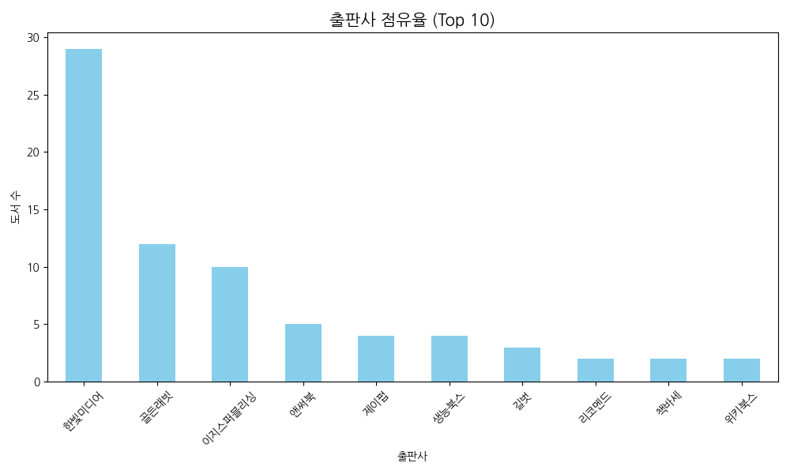
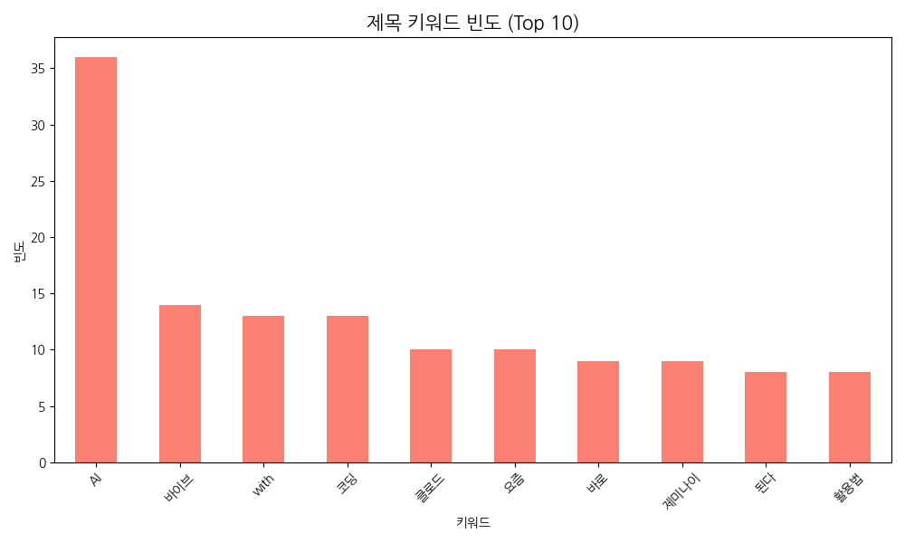
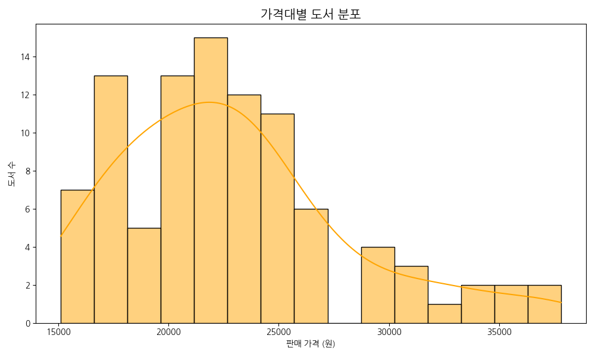
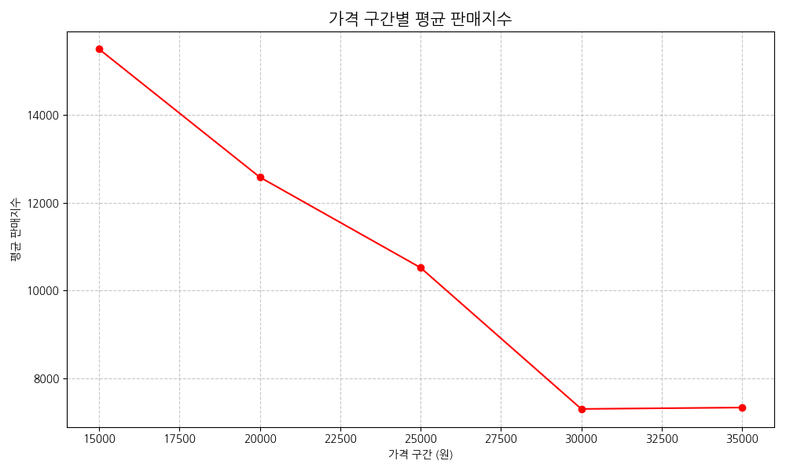
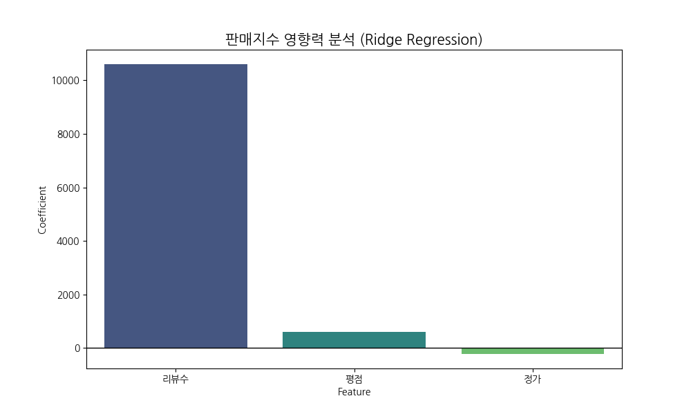

본 프로젝트는 YES24 IT/컴퓨터 카테고리의 데이터를 정밀 분석하여 시장의 흐름을 이해하고, 효율적인 마케팅 아이디어를 도출해 본 개인 프로젝트입니다. Python을 활용하여 웹 크롤링부터 데이터 전처리, 시각화, 통계 모델링까지 데이터 분석의 전 과정을 직접 수행하며 실무적인 인사이트를 찾는 데 주력하였습니다.
수집 데이터: YES24 IT/컴퓨터 베스트셀러 약 380개 품목
수행 역할: 웹 크롤링을 통한 원천 데이터 확보 및 분석 모델 설계
핵심 발견: 입문자 중심의 시장 구조와 이에 따른 가격 및 키워드 민감도 확인

데이터 분석을 통해 상위권 전문 출판사의 과점 현상을 확인했습니다. IT 도서는 기술의 정확성이 무엇보다 중요하기 때문에 독자들은 브랜드를 리스크 완화를 위한 최우선 지표로 활용한다고 판단했습니다.
마케팅 아이디어 제안: 인지도가 낮은 신규 도서라면 전문가 추천이나 베타테스터 검증 지표를 상세 페이지 최상단에 배치하여 신뢰 공백을 메우는 전략이 효과적일 것으로 생각합니다.

분석 결과 파이썬과 인공지능 키워드에 수요가 집중되는 현상을 발견했습니다. 이는 시장의 중심이 전공자에서 비전공 직장인으로 이동했음을 의미하며, 특히 입문 키워드의 높은 빈도는 즉각적인 활용 가능성을 중시하는 경향을 보여줍니다.
마케팅 아이디어 제안: 업무 자동화나 데이터 활용 기초처럼 직장인들이 공감할 수 있는 실무 테마를 제목과 광고에 적극적으로 활용한다면 유입 효율을 큰 폭으로 개선할 수 있다고 판단했습니다.


가격대별 성과를 분석한 결과 2만 원 이하에서 최대 성과가 나타나고 이후 급격히 감소하는 패턴을 확인했습니다. 이를 통해 입문자들이 기꺼이 지불하는 심리적 마지노선이 2만 원 내외에 형성되어 있음을 알 수 있었습니다.
마케팅 아이디어 제안: 대중적인 베스트셀러를 목표로 한다면 실구매가를 1.8만 원 내외로 조정하여 구매 장벽을 낮추는 가격 포지셔닝이 초기 시장 안착에 유리할 것으로 보입니다.

모델링 결과 리뷰 수의 영향력이 압도적으로 높게 나타났으나, 이는 판매량이 증가함에 따라 누적되는 후행 데이터라고 판단했습니다. 리뷰는 그 자체로 판매를 결정하기보다 신규 고객의 구매를 확정 짓는 신뢰 자산의 역할을 한다고 분석했습니다.
마케팅 아이디어 제안: 초기에는 평점 관리에 집중하여 긍정적 지표를 확보하고, 이후 누적된 리뷰를 안심 구매 메시지로 활용하는 선순환 구조를 구축하는 방향을 제안합니다.
DX 실무 키워드 최적화 및 타깃 SNS 광고 집행
2만 원 이하 스윗스팟 가격 포지셔닝 및 프로모션
누적 리뷰 기반의 안심 구매 메시지 강화